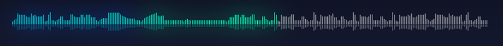

<div class="left" style="width: 2%;"></div>
<div class="left" style="width: 2%;"></div>
<div class="left ArtistsImg" style="width: 4%;">
    
</div>
<div class="left ArtistsInfo" style="width: 12%;">
    <p class="nameS">UnSainted</p>
    <p class="nameA">Slipknot</p>
</div>
<div class="left ButtonPlay" style="width: 11%;">
    <div class="left" style="width: 27%;">
        <mat-icon class="icon">
            skip_previous
        </mat-icon>
    </div>
    <div class="left" style="width: 46%;">
        <mat-icon *ngIf="isPlay" class="pau" (click)="play()">
            pause_circle_filled
        </mat-icon>
        <mat-icon *ngIf="!isPlay" class="pau" (click)="play()">
            play_circle_filled
        </mat-icon>
    </div>
    <div class="left" style="width: 27%;">
        <mat-icon class="icon">
            skip_next
        </mat-icon>
    </div>
</div>
<div class="left TimePlay" style="width: 3%;">
    <div *ngIf="timeS>9" style="padding-left: 0.6vw;">{{timeM}}: {{timeS}}</div>
    <div *ngIf="timeS<10" style="padding-left: 0.6vw;">{{timeM}}: {{"0"+timeS.toString()}}</div>

</div>
<div class="left WaveMucsic" style="width: 47%;">
    <!--  -->
    <mat-progress-bar class="progress" mode="determinate" value="{{percentProcess}}"></mat-progress-bar>
</div>
<div class="left TimePlay" style="width: 3%;">
    <p style="padding-left: 0vw;">{{minEnd}}:{{secEnd}}</p>
</div>
<div class="left Volume" style="width: 3%;">
    <mat-icon (click)="Mute()" *ngIf="isMute==0" class="Volume">volume_up</mat-icon>
    <mat-icon (click)="Mute()" *ngIf="isMute!=0" class="Volume">volume_off</mat-icon>
</div>
<div class="left" style="width: 10%;">
    <mat-slider [(ngModel)]="weight" #slider (input)="volume = $event.value" [value]="setVolume()" thumbLabel
        [displayWith]="changeVolumeTag" min="0" max="100">
    </mat-slider>
</div>
<div class="left" style="width: 2%;"></div>

<audio poster="" #audioControl playsinline webkit-playsinline (ended)="vidEnded()">
</audio>